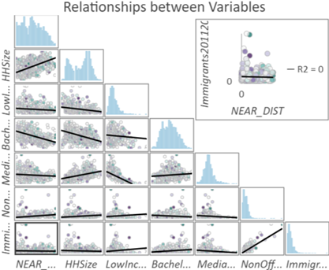

Lab 6 Analyzing Green Equity Using Geographically Weighted Regression
Written by Unkown
Lab Overview
In this lab, you will be exploring a few different statistical approaches to modelling geographic data, including geographically weighted regression (GWR). GWR is the spatial extension of aspatial regression analysis and much more. Traditional regression analysis assumes that global statistics adequately describe local relationships that might exist in the data. For example, consider looking at the relationship between housing prices and the floor space, lot size, etc., of houses in the city of Vancouver. While we could develop a ‘global’ model that adequately describes the relationship between those variables, knowing what you do about housing prices in the city of Vancouver (e.g., that a house of similar dimensions, age, lot size, etc., in the east side of Vancouver will sell for hundreds of thousands of dollars less than an identical house in the west side of Vancouver), the utility of such a model when looking at neighborhood-level housing issues would be very doubtful. Nonetheless, for decades such models, such as hedonic models, have been normalized in real estate research.
Similarly, consider studying the relationship between rates of crime or diseases to environmental conditions, local conditions can be much more important than any global relationship that might be discovered via a traditional aspatial statistical approach. Using polygon or point data, GWR allows us to explore the local relationships amongst a set of variables and examine the results spatially using ArcGIS Pro. It should be noted that in R you can find more sophisticated approaches to GWR than what is provided by ArcGIS Pro.
In this lab, you will explore the equity of green space for the city of Vancouver using Landsat imagery and demographic data from the 2021 Canadian census.
Why is access to green spaces so important? Human well-being, including physical and psychological well-being increase when residents are exposed to green space and urban forests. In addition, ecosystem services provided from green spaces include improved air quality, urban heat island mitigation, and opportunities for recreation. Yet, there is unequal access to green spaces across urban landscapes. The distribution of green space is often disproportionately present in affluent communities. So, you will test the hypothesis that there is less green space in marginalized communities. We cannot infer any causal relationships, but we can examine the relationship between the location of green spaces and demographic variables.
Vancouver is the most populous city in British Columbia, Canada with a population of 662,248 in 2021. Vancouver is an ideal study site because of the city’s high level of heterogeneity among its demographic and green space structure.
Below is a table of demographic variables that we will use for this analysis:
| Socioeconomic variables per Dissemination Area | Units |
|---|---|
| Population | Persons |
| Population density | Persons per area |
| Households | Families |
| Household size | Persons per household |
| Low income households based on the Low-income measure, after tax (LIM-AT) | % |
| Persons with a bachelor’s degree | % |
| Age | Average of population |
| Senior citizens (65+ years) | % |
| Children (0-14 years) | % |
| Unemployment rate | % |
| Median income | $ |
| First official language spoken is neither English nor French | Persons |
| Mother tongue is a non-official language | Persons |
| Immigrants arriving in 2011-2016 | Persons |
redo these
Apply advanced SQL and PostGIS functions to a relational database to prepare high-dimensional census data for analysis
Calculate a vegetation index from Landsat imagery and report summary statistics over census dissemination areas
Evaluate different models and defend your model selection
Interpret charts and statistics of ordinary least squares and geographically weighted regression
Map geographically weighted regression results and interpret and defend your conclusions
Deliverables
A table with the OLS and GWR results
Lab report with the following specification:
A two-page report (PDF) outlining your results with at least one map
Report should satisfy the following requirements:
- 1” margins
- 12 point font
- single spaced
- maximum of two pages
- use headings as needed
- omit your name, student number, date
Data
The data, including demographic variables, a green spaces polygon, and a DA polygon, will be provided in a geodatabase on Canvas.
Task 1: Join Demographics data to the Dissemination Areas
Statistics Canada census data are distributed in tables. These data can be particularly challenging to work with because they span multiple geographical hierarchies (e.g., national, provincial, municipal, etc.), multiple dates (the Canadian census occurs every 5 years), many demographic dimensions (e.g., population, age, education, language, etc.), and there are an enormous amount of enumerated areas.
The smallest geographic unit that census data are enumerated over are known as Dissemination Areas (DA). Statistics Canada gives the definition:
A dissemination area (DA) is a small, relatively stable geographic unit composed of one or more adjacent dissemination blocks with an average population of 400 to 700 persons based on data from the previous Census of Population Program. It is the smallest standard geographic area for which all census data are disseminated. DAs cover all the territory of Canada.
As of the 2021 Canadian census, there are 57,936 unique Dissemination Areas. Each Dissemination Area is described by 2,631 unique characteristics (total population, age, education, language, etc.). That is a whopping 152 million values for describing Canadians! Lucky for us, we will be working with DAs for Vancouver, British Columbia and only a handful of characteristics.
First, load all the data from the geodatabase into ArcGIS Pro and explore the table and feature classes. As a first step, you will need to join the Demographics table with the VancouverDA feature class.
Step 1: Determine what columns to join across both files.
Step 2: Carry out a join by right-clicking on the VancouverDA and selecting ‘Add Join’. When you try to join both fields, you should have received an error.
Step 3: To uncover the reason for your error, open both attribute tables and hover your mouse over the column headings. Note: You cannot conduct a join when the field types are different.
Step 4: To navigate around this issue, create a new field in the Demographics table named DAUID2 that matches the column that you would like to join in the VancouverDA feature class.
Step 5: Next, use ‘Calculate’ in the attribute table to populate the field with the relevant information.
Step 6: Join your Demographics table with the VancouverDA feature class again.
Step 7: Export your feature class as VancouverDemo because certain tools will not work on a feature class that has a join.
Note: There are many columns in the attribute table from the VancouverDA feature class that you will not be using for the analysis. Feel free to hide the columns that will not be in use.
Task 2: Determine the distance from green spaces to Disssemination Areas
To determine the relationship between green spaces and demographic variables, you will need to calculate the distance of every DA to the nearest green space. Specifically, we are going to explore the relationship between the two largest green spaces in Vancouver, Pacific Spirit Park and Stanley Park and the DAs.
Step 1: : First, you will need to extract Stanley Park and Pacific Spirit Park from the Green Spaces shapefile. To do so, you can sort the feature class by Shape_Area or extract the parks via a SQL statement.
Step 2: Now, you will use the ‘Near’ tool with VancouverDemo as your input features. When using the ‘Near’ tool, there is no need to specify a search radius or alter any other default parameters.
Step 3: Alter the symbology to visually examine the distance of DAs to both green spaces.
Task 3: Detrmine the variables to include in your analysis
To conduct a GWR analysis, it is important to initially analyze our range of variables to determine which variables and combination of variables have the strongest relationship with our dependent variable, green spaces. To conduct the initial analysis, you will use a tool named ‘Exploratory Regression’, which is part of the Spatial Statistics Toolbox. Click here to learn more about the tool.
Step 1: Open the ‘Exploratory Regression’ tool.
Step 2: Select VancouverDemo as your input feature and NEAR_DIST as your dependent variable.
Step 3: Select twelve of the demographic variables, excluding Population and Households, as your candidate explanatory variables.

Step 4: Select View Details after you run the tool and analyze the messages. The messages will help us determine which variables are most significant. Under the heading ‘Highest adjusted R-squared results’, you can explore the relationship between one or more variables and the dependent variable. As you can see, the highest R-squared results are when five variables are used, resulting in an R-squared of 0.60.
Step 5: Record the demographic variables that are part of both models with the highest R-squared value. (Note: There should be six variables.)
Task 4: Determine the Overarching Relationship Between Green Spaces and your Variables
Recording the variables in Task 3 is the first step to understanding the most important variables. Next, you will further analyze your variables using the ‘Ordinary Least Squares’ tool.
Step 1: Open the ‘Ordinary Least Squares’ tool.
Step 2: Select the six variables from Task 3 as your explanatory variables.
Step 3: When you run the tool, select View Details and copy the text under Messages to examine later for your report. (Note: Ignore the errors that state that there are bad records. These records contain null values and therefore are not included in the analysis.) In addition, review the features output.

Task 5: Conduct a Geographically Weighted Analysis
Unlike an OLS, a GWR analysis is more localized. You will use the same set of variables to run a GWR to be able to compare results between both analyses.
Step 1: Open the ‘Geographically Weighted Regression’ tool.
Step 2: Use the same inputs that you used for the OLS tool. For model type, select Continuous (Guassian). For neighborhood type, select Number of neighbors. As you do not know the ideal neighborhood size for our localized regression analysis, you can use the Golden search method indicating a range from 50 to 250.

Step 3: After you have run the tool, examine the View Details and copy the results into a text file for your report. What was the purpose of defining the neighbors? In addition, how does the R-squared value for GWR compare to OLS?
Step 4: With your output, there are a series of charts that you can explore to better understand the individual relationships between variables. Take time to understand the individual relationships between variables for your report.

Final Report
In addition to including relevant maps and tables, please answer the following questions in your report:
Do you have any hypotheses as to which variables were important for the analysis?
Are there any other variables that you would like to include in the analysis?
What is Ordinary Least Squares (OLS)?
What is Geographically Weighted Regression (GWR)?
What is the difference between OLS and GWR?
When would it be appropriate to use each method?
Summary
Geographically weighted regression can be a powerful tool for exploring spatial relationships. It takes some care and practice learning to interpret the many statistics along the journey, but it is one of the statistical methods that is rewarding to map and visualize. You should think of geographically weighted regression as a first approach at looking at a problem. It is great for exploring relationships, but not necessarily testing them. As you have seen, geographically weighted regression is a wonderful way to generate spatial hypotheses about data and explore the underlying tendencies of different relationships. Along the way, you have also learned how to wield census data which pair well with a wide variety of spatial analyses once you have decoded and unlocked their spatial mysteries.
Return to the Deliverables section to check off everything you need to submit for credit in the course management system.